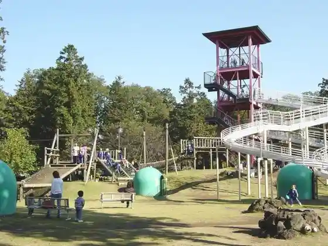
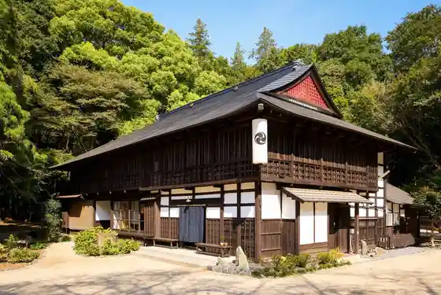
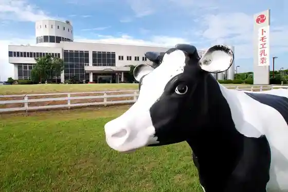

Neburu Park
Kogashi, Ibaraki · 0280-92-7300 · Official / source link

Roadside Station Makuraga no Sato Koga
Kogashi, Ibaraki · 0280-23-2611 · Official / source link
Kogashi Kubo Park (Kogashi General Park)
Kogashi, Ibaraki · 0280-47-1129 · Official / source link
Ko Minka kominka - Sui -sui
Kogashi, Ibaraki · 0280-98-3465 · Official / source link

Tomoe Nyugyo (Kabu) Gyunyu Museum
Kogashi, Ibaraki · 0280-32-1111 · Official / source link

Kogashi History Museum
Kogashi, Ibaraki · 0280-22-5211 · Official / source link
Takami Senseki Memorial Museum
Kogashi, Ibaraki · 0280-22-5211 · Official / source link
Kogashi Literature Museum
Kogashi, Ibaraki · 0280-21-1129 · Official / source link
Aoki Shuzo
Kogashi, Ibaraki · 0280-32-5678 · Official / source link
O Yasumi Tokoro Saka Cho
Kogashi, Ibaraki · 0280-22-2781 · Official / source link
JA Ibaraki Mutsumi Nosambutsu Chokubai Tokoro Sowa Mise
Kogashi, Ibaraki · 0280-91-1315 · Official / source link
Kyu Hida Ie House
Kogashi, Ibaraki · 0280-22-5111 · Official / source link
Kaiseki Yu Zen Fukumitsu
Kogashi, Ibaraki · 0280-22-4911 · Official / source link
Musashi Ya
Kogashi, Ibaraki · 0280-22-5050 · Official / source link
Katsu Taro Sohonten Sowa Mise
Kogashi, Ibaraki · 0280-92-9333 · Official / source link
Tenkoku Art Museum
Kogashi, Ibaraki · 0280-22-5611 · Official / source link
Kogashi Machikado Art Museum
Kogashi, Ibaraki · 0280-22-5911 · Official / source link
Katsu Taro Oka Sato Mise
Kogashi, Ibaraki · 0280-97-1151 · Official / source link
Kyu Nakayama Ie House
Kogashi, Ibaraki · 0280-22-5111 · Official / source link